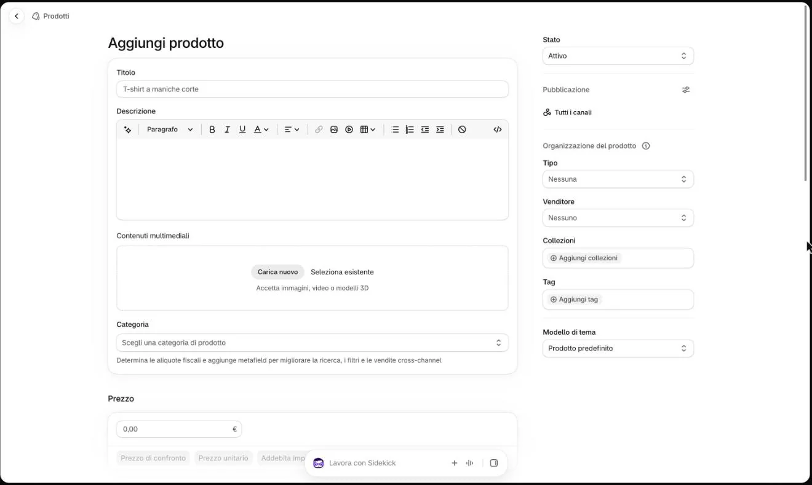
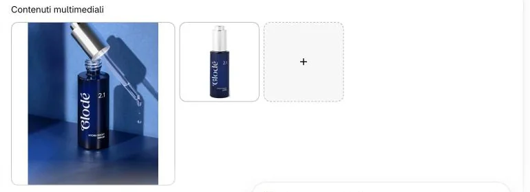
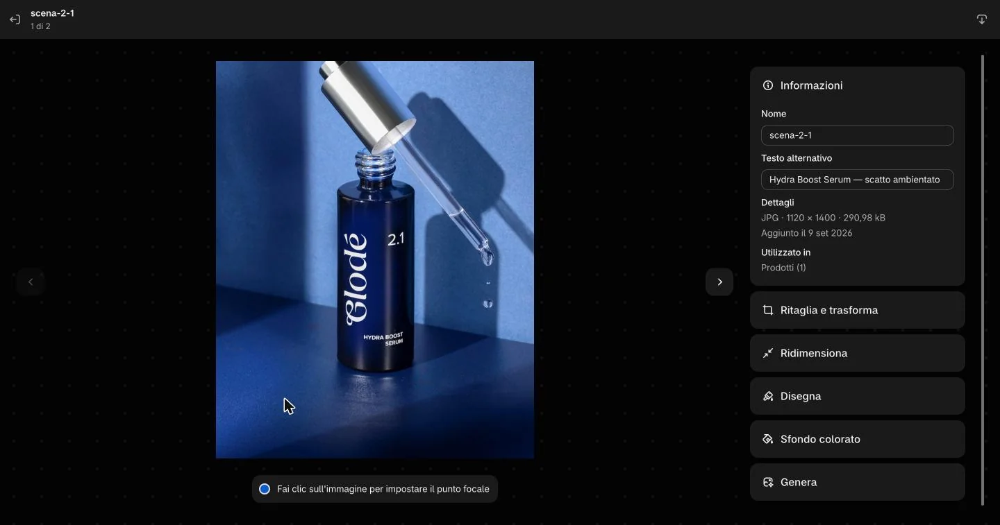
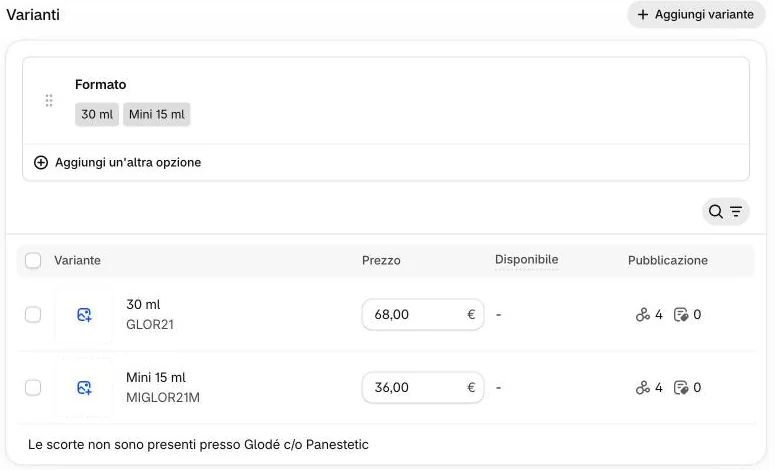

Tenete pronti: le foto (scatto ambientato, packshot, texture), i testi della scheda tecnica, e per ogni formato prezzo, codice articolo (SKU) e codice a barre.
Cliccate «Prodotti», poi «Aggiungi prodotto» in alto a destra.
1Posso duplicare un prodotto che esiste già?
Meglio di no. La copia può portarsi dietro gli stessi attivi e le stesse recensioni dell’originale: correggendoli, cambierebbero anche sul prodotto di partenza.
Se duplicate comunque: in «Attivi del prodotto» e «Recensioni del prodotto» cliccate ogni voce e scegliete «Cancella» nel menu che si apre (toglie quella voce sola), poi scrivetene di nuove; e cambiate SKU e codice a barre.
Il prodotto nuovo parte «Attivo»: prima di tutto mettete lo «Stato» su «Bozza».

2Perché in bozza, e perché subito?
Finché è in bozza nessuna cliente lo vede: potete prepararlo con calma, anche in più volte. Se salvate lasciando «Attivo», il prodotto va online a metà. Lo pubblicate alla fine, nella seconda parte.
Scrivete il «Titolo» e la «Descrizione».
3Come si scrivono?
Titolo: il nome commerciale, come sull’astuccio e come gli altri prodotti (per esempio «Hydra Boost Serum»). È il nome sul sito, nel carrello e nelle mail d’ordine.
Descrizione: due o tre frasi, come nella scheda tecnica. Sul sito si vedono le prime tre righe e «Leggi tutto». Testo semplice: grassetti, colori e link non servono.
La casella «Categoria» sotto le foto lasciatela com’è: anche «Non categorizzato» va bene.
In «Contenuti multimediali» caricate le foto in quest’ordine: scatto ambientato, packshot, texture.

4Che forma devono avere?
Scatto ambientato: verticale 4:5 (per esempio 1080×1350 pixel), con il prodotto al centro. È la foto che si vede aprendo la scheda.
Packshot su bianco: quadrato o della sua forma, non 4:5. Il sito lo riconosce proprio così e lo usa per le piastrelle del catalogo, del menu, della home e del test.
Texture: la terza, se c’è (Hydra Boost Serum, nella foto, ne ha solo due).
E se il prodotto si vede piccolo nella prima foto?
Non mettete prima il packshot: la prima resta lo scatto ambientato. Serve un ritaglio diverso dello scatto, con il prodotto più al centro. Se non riuscite, scriveteci.
Posso pubblicarlo senza foto?
No: un prodotto senza foto resta fuori da menu, home e test.
Cliccate ogni foto e scrivete nella casella «Testo alternativo». Non cliccate sulla foto grande.

5Non quiPerché non devo cliccare sulla foto?
In questa finestra un clic sulla foto sposta il «punto focale» (lo dice la scritta sotto la foto) e cambia come viene ritagliata sul sito. Cliccate solo nella casella «Testo alternativo», poi uscite con la freccia in alto a sinistra.
Cosa scrivo?
Come per gli altri prodotti: «Hydra Boost Serum — scatto ambientato», «Hydra Boost Serum — packshot», «Hydra Boost Serum — texture».
La parola «texture» va scritta in minuscolo: è così che il sito sceglie la foto per la banda «La formula».
Nel riquadro «Varianti» aggiungete l’opzione «Formato» con il suo valore e scrivete il «Prezzo» nella tabella.

6Anche se c’è un solo formato?
Sì. Senza l’opzione «Formato» la piastrella mostra «Sieri · » e niente dopo.
Scrivete il valore come negli altri prodotti, per esempio «30 ml». Per la Mini c’è un compito a parte: Aggiungere la Mini 15 ml.
In «Organizzazione del prodotto» scegliete «Tipo» e «Venditore» e scrivete i «Tag».
7Cosa va in «Tipo»?
Esattamente una di queste sei, con le stesse maiuscole e gli stessi spazi: Detergenti · Esfolianti · Sieri · Creme · Maschere · Contorno occhi e labbra.
Una lettera diversa («Siero» invece di «Sieri») e il prodotto non entra in nessuna famiglia, senza nessun messaggio d’errore. Una famiglia nuova va chiesta all’agenzia. In «Venditore»: «Glodé», come gli altri.
Cosa scrivo nei «Tag»?
Uno per uno: la famiglia, ogni esigenza e ogni tipo di pelle del prodotto, scritti uguali ai campi. Esempio, Velvet Multi-Cleanse Cream: Detergenti, Detersione e esfoliazione, Matura, Mista, Secca, Sensibile.
Servono ai filtri combinati del catalogo (per esempio Sieri + pelle secca): senza tag il prodotto sparisce quando una cliente aggiunge il filtro.
E «Collezioni»?
Non serve sceglierle: famiglie, esigenze e tipi di pelle riempiono le collezioni da soli. Si aggiungono a mano solo «I più amati» e «Idee regalo».
Cliccate «Salva»: il prodotto resta in «Bozza».
Perché salvare adesso?
La pagina di una variante, dove si scrivono SKU e codice a barre, l’abbiamo vista solo su un prodotto già salvato: per questo si salva prima. Controllate che lo «Stato» sia ancora «Bozza».
Cliccate la variante nella tabella, scrivete «SKU» e «Codici a barre», poi cliccate «Salva».
9Dove sono SKU e codice a barre?
In fondo, nel riquadro «Scorte»: si aprono cliccandoli o con la freccia a destra. Il «Prezzo» della variante, più in alto, è lo stesso che avete scritto nella tabella.
Che SKU scrivo?
Un codice diverso da tutti gli altri, come quelli di oggi: per esempio GLOR21 è Hydra Boost Serum 30 ml.
Senza SKU sulla prima variante il prodotto non compare in menu né in home (nel catalogo e nella ricerca sì).
E il codice a barre?
È l’EAN a 13 cifre stampato sull’astuccio (quelli di oggi iniziano con 805728440). Serve a Google Shopping.
E le scorte?
Oggi nessun prodotto della linea ha le scorte monitorate: in «Scorte» lasciate l’interruttore com’è, con la scritta «Scorte non monitorate». Se lo cambiate, dovete scrivere la quantità vera: con 0 il prodotto risulta esaurito.
Sul sito
Finché è in bozza, sul sito non c’è. Quando lo pubblicate compare da solo in «Tutta la linea» in home, al posto del suo Numero di linea (Hydra Boost Serum, 2.1, è la quarta piastrella).
 1
1
 7
7
 9
9